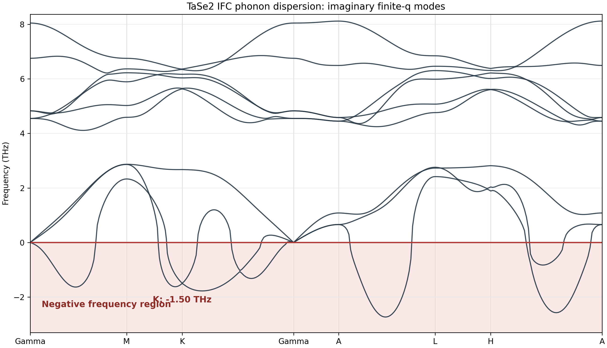
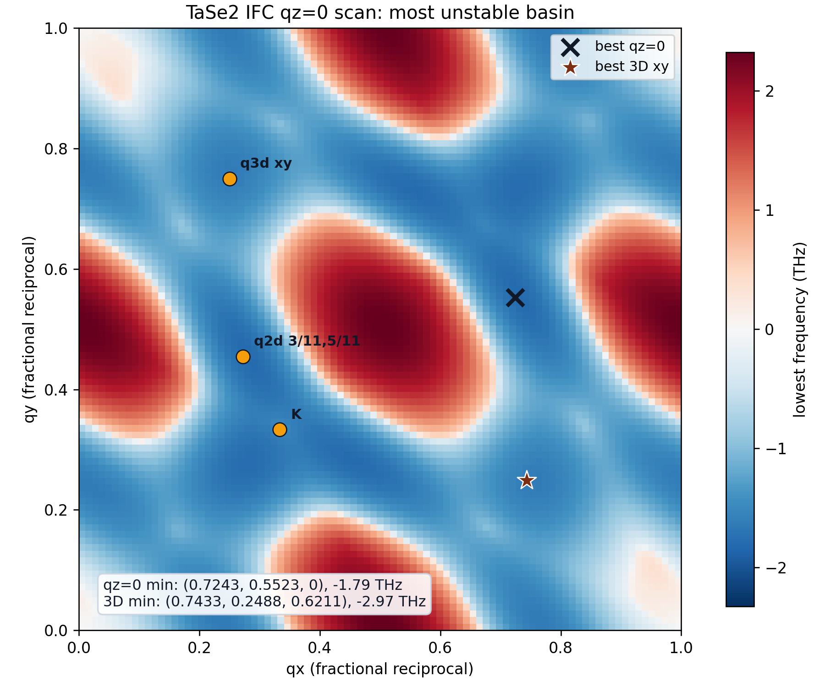
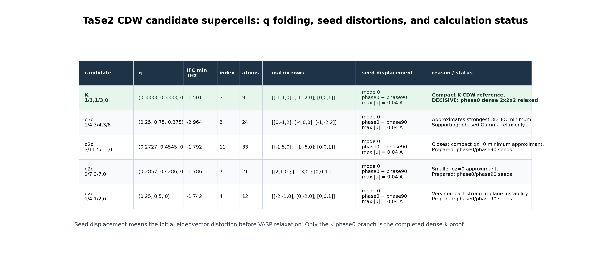
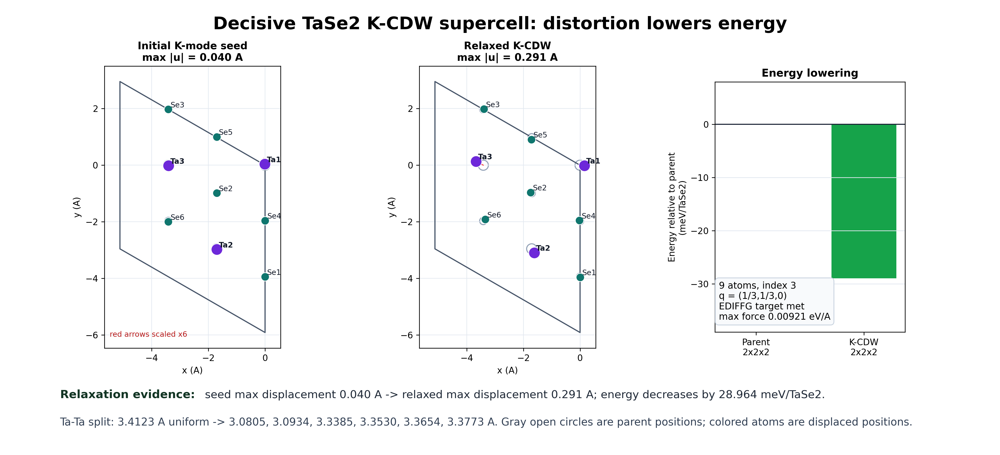

Slide 1 | IFC phonons
TaSe
2
: finite-q imaginary phonons
K: -1.5015 THz
qz=0 min: -1.793 THz
3D min: -2.967 THz
1) dispersion

2) q scan

Slide 2 | q to supercell
Unstable q points define candidate CDW supercells
q . R = integer
seed: eigenvector mode 0
max |u| = 0.04 A

Slide 3 | decisive K-CDW calculation
Dense K-CDW relaxation lowers the energy
9 atoms | index 3
2x2x2 k mesh
max force 0.00921 eV/A

-28.964 meV/TaSe2
relaxed CDW lower than parent
0.04 A -> 0.291 A
seed grows into relaxed PLD
Next check
phonons of relaxed CDW cell